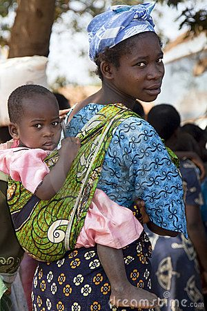

Role of Women in HomeGoing

The role of a woman in the book setting is marriage and childbearing.We can depict this from both chapter one and two.In Effia,Abeeku refused to marry her because she could not bear children;she was not sexually mature because she had not recieved her blood.
When Effia became pregnant,James was happy that she could give him a child.We can also see that a woman's place is in the kitchen.When Effia asks Fiifi what they discussed in the meeting she is told that it was men's business;which was slave trade.In Essie,we see that women captured are made to do house chores.